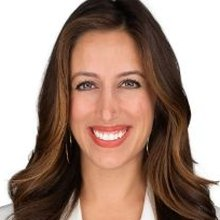

Is the patient in your chair an EVO candidate?
Enter one eye's numbers. See how the patient measures up against the US label, the published outcomes for that prescription, and what the case is worth to your practice compared with LASIK.
Open the calculatorHow it worksNothing you enter leaves this page. No patient data is sent or stored.
What you get in under a minute
- A label checkAge, prescription, ACD, endothelial count and angle against the US directions for use.
- Outcomes for this prescriptionPublished results matched to the patient's diopter range, with sources.
- The per-case economicsEVO and LASIK side by side, per eye and per surgeon hour.
Built by eye surgeons, for eye surgeons
Eye Surgery Today was founded by four practicing eye surgeons. Every tool we make is meant to answer the questions that come up in a real consult.

The decision happens in the consult
Most patients asking about vision correction are not high myopes. This tool puts the label, the evidence and the numbers in one place for the patients in the middle of the range.
Candidacy in seconds
Every US label criterion checked, with how much margin the patient has on ACD and endothelial count.
Evidence for that patient
Refractive accuracy, visual acuity and secondary procedure rates from published studies, matched to the diopter range.
Your own economics
Enter your fees and costs. See what each procedure contributes per eye and per hour of surgeon time.
Enter one eye
Results update as you type. Run the fellow eye separately.
Enter the patient's measurements
The label check, outcomes and economics will appear here.
| Criterion | Result | Detail |
|---|
Lens size and power are calculated by the surgeon in STAAR's OCOS calculation software, per the directions for use. The minimum endothelial counts come from the table in the FDA label (P030016/S035); confirm against the current directions for use.
EVO ICL, per eye
LASIK, per eye
Contribution is the fee minus the costs entered above. It does not include overhead, marketing or financing fees. Monthly difference assumes each of those patients had EVO in both eyes instead.
Where the numbers come from
- Parkhurst G, et al. Three Year Results from the United States FDA Prospective Multicenter Clinical Study of the EVO/EVO+ Implantable Collamer Lens. Clinical Ophthalmology. 2025;19:3237–3248. doi:10.2147/OPTH.S537739
- Modabber M, et al. EVO/EVO+ ICL outcomes in low, intermediate and high myopia, 1,332 patients, Herzig Eye Institute. Presented at the ESCRS Winter Meeting 2024; reported by Healio, February 26, 2024.
- Kamiya K, et al., Japan ICL Study Group. A Nationwide Multicenter Study on 1-Year Outcomes of Posterior Chamber Phakic Intraocular Lens Implantation for Low Myopia. Frontiers in Medicine. 2022;9:762153.
- STAAR Surgical. FDA approves expanded EVO ICL age indication to 21 to 60 years. Reported by CRSToday and Healio, February 2026.
- FDA Summary of Safety and Effectiveness Data, PMA P030016/S035 (EVO ICL): indications, contraindications and minimum endothelial cell density table.
- Visual Performance After Posterior Chamber Phakic Intraocular Lens Implantation and Wavefront-Guided Laser In Situ Keratomileusis for Low to Moderate Myopia (30 ICL eyes, 64 LASIK eyes, −3.00 to −5.88 D).
- Parkhurst GD. A prospective comparison of phakic collamer lenses and wavefront-optimized LASIK for correction of myopia. Clinical Ophthalmology. 2016;10:1209.